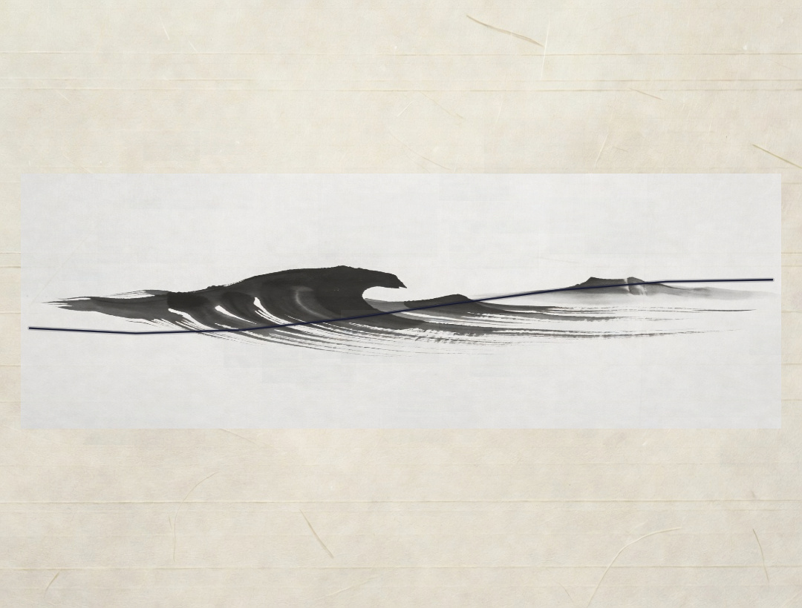
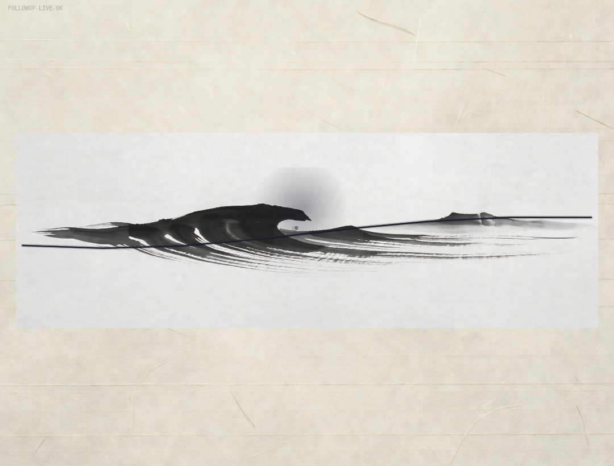

Direct entrypoint: games/mist-settles-on-one-carved-horizon-5ca8e144/index.html (via .factoryx/preview-entrypoint).
Ready = idle first paint (no gesture). Post = ?verify=1 forced sustained baren + cumulative settling + FOLLOWUP-LIVE-OK marker (gated harness, does not affect normal play or first screen).
Rebased onto main (2026-06-20) to clear GitHub merge conflict report; pushed to canonical WO branch; PR #156 head updated.
Fresh chromium run 2026-06-20: direct entrypoint confirmed (no factory home chrome). Only dbus noise; zero game errors. Non-blank captures (ready ~952 kB, post ~956 kB). Playwright lib present but browser shell not pre-cached; chromium direct used for evidence (same as prior passes). DOM dump on entrypoint shows <title>Mist settles...</title> + <canvas> and zero home markers (crew/demos/board etc). Root contrast shows the home page as expected.


Work Order: work-order-1781665243422-followup
Deliverable: mist-settles-on-one-carved-horizon-5ca8e144
Verification date: 2026-06-20 (fresh chromium re-run on direct entrypoint; confirmed NOT serving factory home)